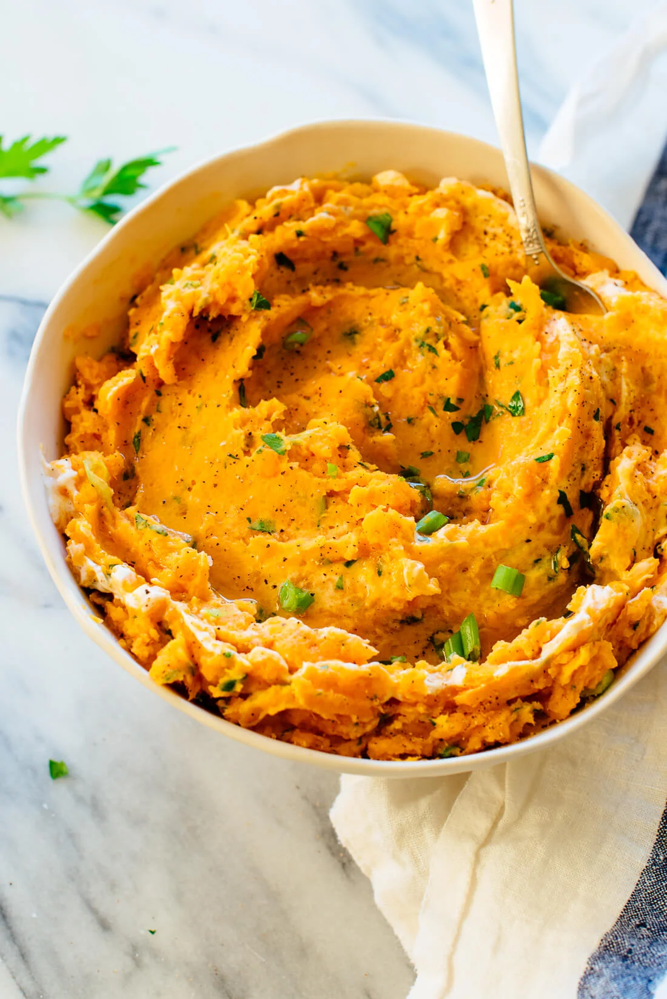

Mashed Sweet Potatoes

Description
These incredible mashed sweet potatoes are mixed with herbs, butter and sour cream. No marshmallows or brown sugar in this mashed sweet potatoes recipe! Recipe yields 6 to 8 side servings.
Ingredients
- 4 pounds sweet potatoes (about 7 small-to-medium), peeled and cut into 1″ cubes
- 2 teaspoons salt, divided
- ⅓ cup finely sliced green onion, mostly green parts (from 1 bunch)
- ⅓ cup finely chopped fresh flat-leaf parsley
- 1 small-to-medium garlic clove, pressed or minced
- ¼ cup sour cream*
- 3 tablespoons butter, cubed
- Freshly ground black pepper
- 1 teaspoon extra-virgin olive oil
Steps
- Place the cubed sweet potatoes in a large saucepan or Dutch oven and add enough water to cover by about 1″. Add 1 teaspoon of the salt and bring the mixture to a simmer over medium-high heat. Reduce the heat and simmer, uncovered, until the potatoes are tender (in other words, it’s easy to slide a fork in and out), about 9 to 12 minutes.
- Drain well, then return the potatoes to the pot. Mash the sweet potatoes to your desired consistency.
- Promptly add almost all of the green onion and parsley, reserving a small amount of each for garnish. Add the garlic, and stir to combine. Then stir in most of the sour cream (reserve roughly 1 tablespoon for garnish), all of the butter, and the remaining 1 teaspoon salt. Season to taste with additional salt (I usually add another ¼ to ½ teaspoon) and freshly ground black pepper.
- Transfer the mashed potatoes to a serving bowl and swirl the reserved sour cream onto the top with a spoon. Sprinkle with the reserved green onion and parsley, drizzle the top lightly with olive oil, and finish with a sprinkle of pepper.
- Serve promptly. Leftovers will keep well, covered and refrigerated, for 3 to 4 days.